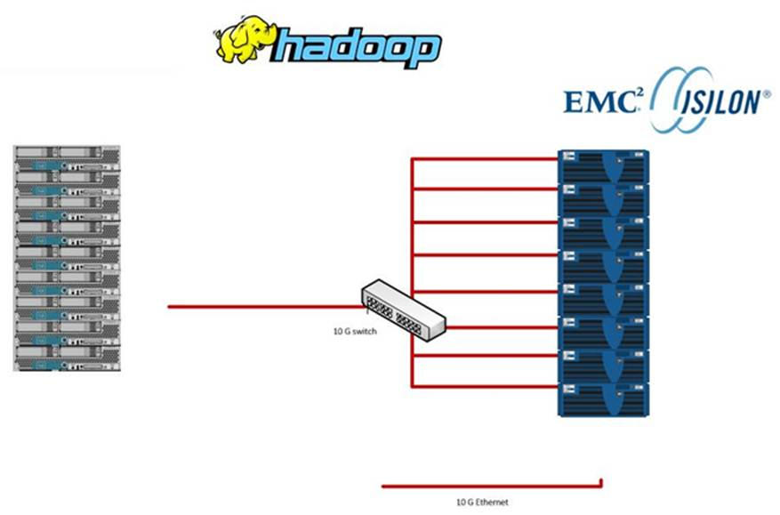

THIS IS A DRAFT
Deploying Cloudera manager and CDH 5 on EMC Isilon
Using VMware Big Data Extensions
Cloudera CDH and Cloudera Manager
CDH (Cloudera’s Distribution Including Apache Hadoop) is the world’s most complete, tested, and widely deployed distribution of Apache Hadoop. CDH is 100% open source and is the only Hadoop solution to offer batch processing, interactive SQL, and interactive search as well as enterprise-grade continuous availability. More enterprises have downloaded CDH than all other distributions combined.
CDH delivers the core elements of Hadoop – scalable storage and distributed computing – as well as all of the necessary enterprise capabilities such as security, high availability and integration with a broad range of hardware and software solutions.
Cloudera Manager is the industry’s first and most sophisticated management application for Apache Hadoop. Cloudera Manager sets the standard for enterprise deployment by delivering granular visibility into and control over every part of the Hadoop cluster — empowering operators to improve performance, enhance quality of service, increase compliance and reduce administrative costs.
Cloudera Manager is designed to make administration of Hadoop simple and straightforward, at any scale. With Cloudera Manager, you can easily deploy and centrally operate the complete Hadoop stack. The application automates the installation process, reducing deployment time from weeks to minutes; gives you a cluster-wide, real-time view of nodes and services running; provides a single, central console to enact configuration changes across your cluster; and incorporates a full range of reporting and diagnostic tools to help you optimize performance and utilization.
More information on Cloudera can be found here:
Isilon Scale-Out NAS for HDFS
EMC Isilon is the only scale-out NAS platform natively integrated with the Hadoop Distributed File System (HDFS). Using HDFS as an over-the-wire protocol, you can deploy a powerful, efficient, and flexible data storage and analytics ecosystem.
In addition to native integration with HDFS, EMC Isilon storage easily scales to support massively large Hadoop analytics projects. Isilon scale-out NAS also offers unmatched simplicity, efficiency, flexibility, and reliability that you need to maximize the value of your Hadoop data storage and analytics workflow investment.
Overview of Isilon Scale-Out NAS for Big Data
The EMC Isilon scale-out platform combines modular hardware with unified software to provide the storage foundation for data analysis. Isilon scale-out NAS is a fully distributed system that consists of nodes of modular hardware arranged in a cluster. The distributed Isilon OneFS operating system combines the memory, I/O, CPUs, and disks of the nodes into a cohesive storage unit to present a global namespace as a single file system.
The nodes work together as peers in a shared-nothing hardware architecture with no single point of failure. Every node adds capacity, performance, and resiliency to the cluster, and each node acts as a Hadoop namenode and datanode. The namenode daemon is a distributed process that runs on all the nodes in the cluster. A compute client can connect to any node through HDFS.
As nodes are added, the file system expands dynamically and redistributes data, eliminating the work of partitioning disks and creating volumes. The result is a highly efficient and resilient storage architecture that brings all the advantages of an enterprise scale-out NAS system to storing data for analysis.
Unlike traditional storage, Hadoop's ratio of CPU, RAM, and disk space depends on the workload—factors that make it difficult to size a Hadoop cluster before you have had a chance to measure your MapReduce workload. Expanding data sets also makes sizing decisions upfront problematic. Isilon scale-out NAS lends itself perfectly to this scenario: Isilon scale-out NAS lets you increase CPUs, RAM, and disk space by adding nodes to dynamically match storage capacity and performance with the demands of a dynamic Hadoop workload.
An Isilon cluster optimizes data protection. OneFS more efficiently and reliably protects data than HDFS. The HDFS protocol, by default, replicates a block of data three times. In contrast, OneFS stripes the data across the cluster and protects the data with forward error correction codes, which consume less space than replication with better protection.
Cloudera and EMC joint support statement
EMC Isilon and Cloudera are pleased to communicate a business collaboration and intention to enable joint support for EMC Isilon scale-‐out NAS and Cloudera Enterprise products to bring the value of Cloudera Enterprise to customers using EMC Isilon storage.
EMC Isilon Scale‐Out NAS storage for Hadoop currently supports the Apache Hadoop Distributed File System (HDFS) protocol. CDH is 100% open source and is the only Hadoop solution to offer batch processing, interactive SQL and interactive search, as well as enterprise‐grade continuous availability.
EMC Isilon allows a customer to start using Hadoop now by using already existing data thus eliminating extra copies and reducing associated CAPEX costs for additional storage capacity. In addition, EMC Isilon is the only Hadoop storage solution that allows you access to the data via NAS (i.e. SMB) or HDFS protocols as well as providing a POSIX‐Compliant file system for regulated environments.
EMC Isilon and Cloudera are now jointly working to support the following two scenarios:
- Customers running Cloudera Enterprise on EMC Isilon NAS products.
Customers will be able to leverage the full Cloudera Enterprise offering on their existing data sets stored in EMC Isilon. Cloudera Enterprise is a subscription offering that combines CDH with Cloudera Manager for system management, Cloudera Navigator for data management, technical support, indemnity, and open source advocacy. Customers will be able to simplify storage management and reduce overall costs by managing storage and compute independently, with new server hardware purchases required only for additional compute in the case of an existing EMC Isilon installation.
- Customers wishing to integrate existing Cloudera Enterprise and EMC Isilon clusters.
Customers will be able to integrate existing EMC Isilon clusters with existing HDFS‐storage based Cloudera Enterprise clusters by using existing Hadoop tools built for data movement. This scenario will allow customers to more easily ingest data into both systems, as well as enable use cases such as online or remote backup and disaster recovery.
EMC Isilon and Cloudera are currently working on product development and support models, and intend to have a supported joint offering in the market in the first half of 2014.
In addition, EMC Isilon and Cloudera are working together to advance the ongoing joint roadmap for Cloudera Enterprise on EMC Isilon Scale‐Out NAS for subsequent releases of CDH, Cloudera manager, Cloudera Navigator and OneFS software.
This guide illustrates the first scenario. Using an existing Isilon cluster to integrate with Cloudera manager to allow CDH access to existing data sets located in the Isilon cluster.
Environment
Versions
The test environment used for this document consists of the following software versions:
- Cloudera Manager 5.1.0
- Cloudera CDH 5.1.0
- Isilon OneFS 7.1.1 with patch-130611
- VMware vSphere Enterprise 5.5.0
- VMware Big Data Extensions 2.0
Hosts
A typical Hadoop environment composed of many types of hosts. Below is a description of these hosts.

List of Hosts in Hadoop Environments
| Host | Description |
|---|---|
| DNS/DHCP Server | It is recommended to have a DNS and DHCP server that you can control. This will be used by all other hosts for DNS and DHCP services. |
| VMware vCenter | VMware vCenter will manage all ESXi hosts and their VMs. It is required for Big Data Extensions (BDE). |
| VMware Big Data Extensions | This will run the Serengeti components to assist in deploying Hadoop clusters. |
| VMware ESXi | Physical machines will run the VMware ESXi operating system to allow virtual machines to run in them. |
| Linux workstation | You should have a Linux workstation with a GUI that you can use to control everything with. |
| Isilon nodes | You will need one or more Isilon Scale-Out NAS nodes. For functional testing, you can use a single Isilon OneFS Simulator node instead of the Isilon appliance. The nodes will be clustered together into an Isilon Cluster. Isilon nodes run the OneFS operating system. |
| Isilon InsightIQ | This is optional licensed software from Isilon and can be used to monitor the health and performance of your Isilon cluster. It is recommend for any performance testing. |
| Cloudera Manager | A dedicated host will run the Cloudera Manager application and the Cloudera Management Services. This will deploy and monitor the Cloudera CDH Hadoop components. |
| Cloudera CDH Hadoop Master | This host will the YARN Resource Manager, Job History Server, Hue Server, Hive Metastore Server, etc. In general, it will run all "master" services except for the HDFS Name Node. |
| Cloudera CDH Hadoop Name Node | This host will only run the CDH Name Node. This will only be used during the installation process. Once you reconfigure the CDH components to use Isilon for HDFS, this node will be idle. |
| Cloudera CDH | There will be any number of worker nodes, depending on the compute requirements. Each node will run the YARN Node Manager, Impala Daemon, HBase Region Server, etc. During the installation process, the first 3 of these nodes will run the HDFS Data Node but these will become idle like the CDH HDFS Name Node. |
Copyright © 2014 EMC Corporation. All Rights Reserved. EMC believes the information in this publication is accurate as of its publication date. The information is subject to change without notice. The information in this publication is provided “as is.” EMC Corporation makes no representations or warranties of any kind with respect to the information in this publication, and specifically disclaims implied warranties of merchantability or fitness for a particular purpose. Use, copying, and distribution of any EMC software described in this publication requires an applicable software license. For the most up-to-date listing of EMC product names, see EMC Corporation Trademarks on EMC.com. VMware and vSphere are registered trademarks or trademarks of VMware, Inc. in the United States and/or other jurisdictions. All other trademarks used herein are the property of their respective owners.